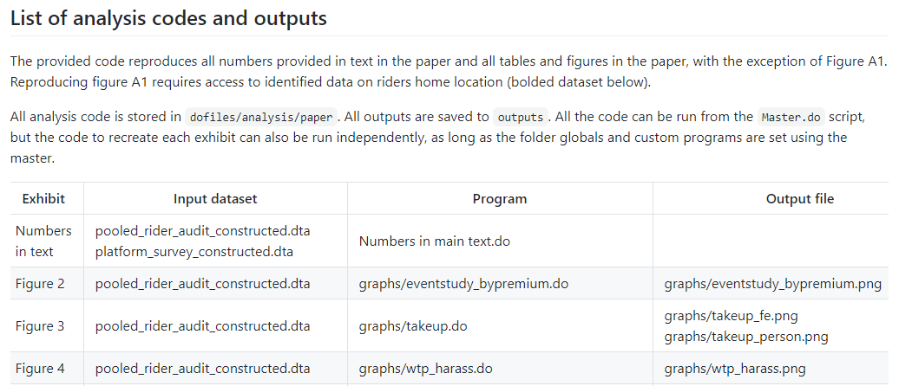
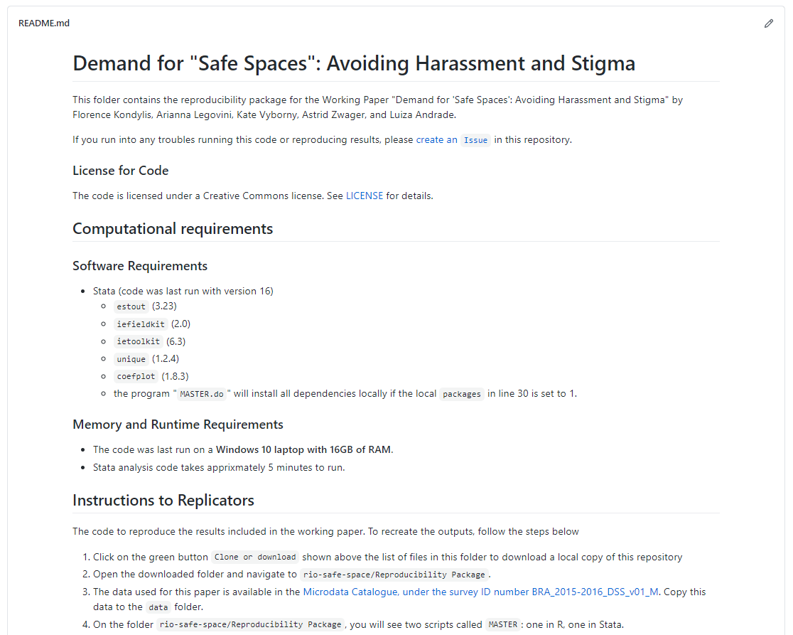

Chapter 7 Publishing reproducible research outputs
Publication typically involves many iterations of data, code, and code output files, with inputs from multiple collaborators. This process can quickly become unwieldy. It is in nobody’s interest for a skilled and busy researcher to spend days re-numbering figures, tables, or references (and it can take days) when a reasonable amount of up-front effort can automate the task. Similarly, simultaneous collaboration should not involve the repetitive and error-prone task of manually resolving sets of tracked-changes documents with conflicting edits. Furthermore, for most development data projects, completing a research output is not the end of the task. Academic journals increasingly require reproducibility packages containing the data, code, and supporting materials needed to recreate the results. DIME requires reproducibility packages for all published outputs. Replication materials represent an intellectual contribution in their own right, because they enable others to learn from your process and better understand the results you have obtained. If you have organized your analysis process according to the general principles outlined in earlier chapters, publication will not require substantial reorganization of the work you have already done. Hence, publication is the conclusion of the system of transparent, reproducible, and credible research we introduced from the very first chapter of this book.
In this chapter, we suggest tools and workflows for efficiently managing collaboration on research and policy outputs and ensuring reproducible results. The first section discusses how to use dynamic documents to collaborate on writing. The second section covers how to prepare and publish original data, an important research contribution in its own right. The third section provides guidelines for preparing functional and informative reproducibility packages. In all cases, we note that technology is rapidly evolving and that specific tools noted here may not remain cutting-edge, but the core principles involved in publication and transparency will endure.
Summary: Publishing Reproducible Research Outputs
Whether you are writing a policy brief or academic article, or producing some other kind of research product, you should create three final, polished outputs that are ready for public release (or internal archiving if not public).
1. The data publication package. If you collected or obtained data that you have the right to redistribute, you should make it available to the public as soon as feasible. This release should:
- Contain all non-identifying variables and observations originally collected in a widely accessible format, with a data codebook describing all variables and values
- Contain original documentation about the collection of the data, such as a survey questionnaire, API script, or data use agreement
- Be modified or masked only to correct errors or protect the privacy of people represented in the data
- Be appropriately archived and licensed with clear terms of use
2. The research replication package. You or your organization will typically have the rights to distribute the analytical code, even if data access is restricted. This package should:
- Contain all code required to derive analysis data from the published data
- Contain all code required to reproduce research outputs from analysis data
- Contain README documentation on the use and structure of the code
- Be appropriately archived and licensed with clear terms of use
3. The written research product(s). These should be:
- Written and maintained as a dynamic document, such as a LaTeX file
- Linked to the locations of all code outputs in the code directory
- Re-compiled with all final figures, tables, and other code outputs before release
- Authored, licensed, and published in accordance with the policies of your organization and/or publisher
Takeaways
TTLs/PIs will:
- Oversee the production of outputs and know where to obtain legal or technical support if needed
- Have original legal documentation available for all data
- Understand the team’s rights and responsibilities regarding data, code, and research publication
- Decide among potential publication locations and processes for code, data, and written materials.
- Verify that replication material runs and replicates the outputs in the written research product(s) exactly
RAs will:
- Rework code, data, and documentation to meet specific technical requirements of archives or publishers
- Manage the production process for collaborative documents, including technical administration
- Integrate comments or feedback and support proofreading, translation, typesetting, and other tasks
Key Resources
- View published datasets in the DIME Microdata Catalog: https://microdata.worldbank.org/index.php/catalog/dime/about
- Access our LaTeX resources and exercises: https://github.com/worldbank/DIME-LaTeX-Templates
- Read the DIME Research Reproducibility Standards: https://github.com/worldbank/dime-standards
- Download the Social Science Data Editors template README: https://doi.org/10.5281/zenodo.4319999
Publishing research papers and reports
Development research is increasingly a collaborative effort. This reflects changes in the economics discipline overall: the number of sole-authored research outputs is decreasing, and the majority of recent papers in top journals have three or more authors.266 As a consequence, documents typically pass back and forth between several writers before they are ready for publication or release. As in all other stages of the research process, effective collaboration requires the adoption of tools and practices that enable version control and simultaneous contributions. This book, for example, was written in LaTeX and managed on GitHub.267 As we outlined in Chapter 6, dynamic documents are a way to simplify writing workflows: updates to code outputs that appear in these documents, such as tables and figures, can be passed in to the final research output in a single click, rather than copy-and-pasted or otherwise handled individually. Managing the writing process in this way improves organization and reduces error, such that there is no risk of materials being compiled with out-of-date results, or of completed work being lost or redundant.
Using LaTeX for written documents
As we discussed in Chapter 6, the most widely used software
for dynamically managing formal manuscripts and policy outputs is LaTeX.
It is also becoming more popular for shorter documents,
such as policy briefs,
with the proliferation of skills and templates for these kinds of products.
LaTeX uses explicit references to the file path of each input (such as tables and figures),
which are reloaded from these locations every time the final document is compiled.
This is not possible by default in, for example, Microsoft Word.
There, you have to copy and paste each object
whenever tables, graphs, or other inputs are updated.
As time goes on, it becomes increasingly likely
that a mistake will be made or something will be missed.
In LaTeX, instead of writing in a
“what-you-see-is-what-you-get” mode as you do in Word,
you write plain text in a .tex file,
interlaced with coded instructions formatting the document and linking to exhibits (similar to HTML).
LaTeX manages tables and figures dynamically
and includes commands for simple markup
like font styles, paragraph formatting, section headers and the like.
It includes special controls for
footnotes and endnotes, mathematical notation, and bibliography preparation.
It also allows publishers to apply global styles and templates to already-written material,
reformatting entire documents in house styles with only a few keystrokes.
While LaTeX can produce complex formatting, this is rarely needed for academic publishing, as academic manuscripts will usually be reformatted based on the style of the publisher. (By contrast, policy and other self-produced documents may desire extensive typesetting and investments in custom templates and formatting.) In academia at least, it’s rarely worth the investment to go beyond basic LaTeX tools: the title page, sections and subsections, figures and tables, mathematical equations, bolding and italics, footnotes and endnotes, and, last but not least, references and citations. We acknowledge that many of these functionalities including dynamic updating of some outputs can be achieved in Microsoft Word through the use of plugins and careful workflows. If you can maintain such a workflow, that is an acceptable approach to the same problem, but we recommend moving towards adoption of LaTeX when it is possible for you and your team.
One of the most important tools available in LaTeX
is the BibTeX citation and bibliography manager.268
BibTeX keeps all the references you might use in a .bib file,
then references them using a simple command typed directly in the document.
Specifically, LaTeX inserts references in text using the cite command.
Once this is written, LaTeX automatically pulls all the citations into text
and creates a complete bibliography based on the citations you used whenever you compile the document.
The system allows you to specify exactly how references should be displayed in text
(such as superscripts, inline references, etc.)
as well as how the bibliography should be styled and in what order
(such as Chicago, MLA, Harvard, or other common styles).
The same principles that apply to figures and tables are therefore applied here:
You can make changes to the references in one place (the .bib file),
and then everywhere they are used they are updated correctly with one process.
BibTeX is so widely used that it is natively integrated in Google Scholar.
Since different publishers have different requirements,
it is quite useful to be able to adapt this and other formatting very quickly,
including through using publisher-supplied templates where available.
Because it follows a standard code format,
LaTeX has one more useful trick:
you can convert the raw document into Word
or a number of other formats
using utilities such as pandoc.269
Even though conversion to Word is required
for a number of academic publishers and can even be preferred for some policy outputs,
we still recommend using LaTeX to prepare these when possible.
You should export to Word only at the final stage, when submitting materials.
The CSL (Citation Styles Library) file270
for nearly any journal can also be applied automatically in this process.
Therefore, even in the case where you are required to provide
`.docx} versions of materials to others, or tracked-changes versions,
you can create them effortlessly from a LaTeX document,
then use external tools like Word’s compare feature
to generate integrated track-changes versions when needed.
Getting started with LaTeX as a team
Getting used to LaTeX can be challenging,
but the control it offers over the writing process is invaluable.
Because it is written in a plain text file format,
.tex can be version-controlled using Git.
This makes it possible to manage contributions and version histories
using the same system we recommend for data work.
DIME Analytics has created a variety of templates and resources
that you can adapt for your own team.271
Integrated editing and compiling tools like TeXStudio272
and atom-latex273
offer the most flexibility to work with LaTeX in teams.
Although ultimately worth it, setting up LaTeX environments locally is not always simple, particularly if you are new to working with plain text code and file management. This is because LaTeX requires that all formatting be done in its special code language, and it is not always informative when you do something wrong. This can be off-putting very quickly for people who simply want to get to writing, and staff not used to programming may not easily acquire the necessary knowledge.
Cloud-based implementations of LaTeX can make it easier for your team to use LaTeX without all members having to invest in new skills or set up matching software environments, and can be particularly useful for first forays into LaTeX writing. One example of this is Overleaf.274 Most such sites offer a subscription feature with useful extensions and various sharing permissions, and some offer free-to-use versions with basic tools that are sufficient for a broad variety of applications, up to and including writing a complete academic paper with coauthors.
Cloud-based implementations of LaTeX have several advantageous features for teams compared to classic desktop installations. First, since they are completely hosted online, they avoid the inevitable troubleshooting required to set up a LaTeX installation on various personal computers run by the different members of a team. Second, they typically maintain a single, continuously synced, master copy of the document so that different writers do not create conflicted or out-of-sync copies, or need to deal with Git themselves to maintain that sync. Third, they typically allow collaborators to edit documents simultaneously, though different services vary the number of collaborators and documents allowed at each tier. Fourth, some implementations provide a “rich text” editor that behaves pretty similarly to familiar tools like Word, so that collaborators can write text directly into the document without worrying too much about the underlying LaTeX coding. Cloud services also usually offer a convenient selection of templates so it is easy to start up a project and see results right away without needing to know a lot of the code that controls document formatting.
Cloud-based implementations of LaTeX also have disadvantages. There is still some up-front learning required, unless you’re using the rich text editor. Continuous access to the internet is necessary, and updating figures and tables requires a bulk file upload that is tough to automate. Although some services offer ways to track changes and even to integrate a git workflow, doing version control is not as straightforward as using git locally. Finally, they also vary dramatically in their ability to integrate with file systems where you store your code and code outputs, and so you will need to practice an integrated workflow depending what is available to you. Some teams adopt cloud-based tools as a permanent solution, though our recommendation is to eventually shift to local editing and compiling using tools such as TexStudio and code editors like Atom.
Demand for Safe Spaces Case Study: Publishing Research Papers and Reports
The Demand for Safe Spaces project, among other outputs, produced both a policy brief and a working paper. The policy brief was produced in accordance with DIME communications protocols. For its production, the graphs exported by R and Stata were saved in EPS format and shared with a designer that adapted them to fit DIME’s visual identity. The research paper was written in LaTeX through the overleaf platform, and published on the World Bank Policy Research Working Paper Series under ID 9296.

The policy brief can be viewed at http://pubdocs.worldbank.org/en/223691574448705973/Policy-Brief-Demand-for-Safe-Spaces.pdf.
The working paper can be viewed at https://openknowledge.worldbank.org/handle/10986/33853.
Preparing research data for publication
While we have focused so far on written materials, you must also consider how you will publish the data used in your research. The open science community at large sees data publication both as a citable output and as a necessary transparency measure. Fortunately, it is a conceptually simple task to produce and catalog the required materials. You should be prepared to catalog two separate collections. First, you should catalog the clean data with all variables corresponding directly to fields in the original dataset or data collection instrument (this will not be necessary if you are working with secondary data that was not produced by your team, but you will still need to carefully explain the process of acquiring this data). If you follow the steps outlined in Chapter 5, when you get to the publication stage you will have a cleaned dataset and supporting documentation ready.
Second, you should separately catalog the analysis dataset used for the research output you are publishing. This is typically included in the replication package for the research output, and should assume that another researcher is starting work with only the published clean data in hand.275 The package should also include the data construction scripts that create transformed and derived indicators, project-specific information such as treatment assignment and other indicators generated directly by the research team (another example is constructed record linkages). If you followed the workflow recommended in Chapter 6, by the time you reach publication stage you will already have all necessary files and documentation at hand.
De-identifying data for publication
Before publishing data, you should carefully perform a final de-identification. The objective of de-identification is to reduce the risk of disclosing confidential information in the published dataset. If you are following the workflow outlined in this book, you should have already removed direct identifiers as a first step after acquiring the data (see the discussion of initial de-identification in Chapter 5). For the final de-identification, you should additionally remove indirect identifiers, and assess the statistical disclosure risk of your data.276 Unlike direct identifiers, for which a link (or lack thereof) to public information is verifiable, indirect identifiers require an assessment of the likelihood that an individual can be singled out in the data and then linked to public information using combinations of available data. For example, seemingly innocuous variables such as US zip code, gender, and date of birth uniquely identify approximately 87% of the US population.277 In development data, information such as the size of a household, the ages and marital statuses of the household members, and the types of work or schooling they engage in may be more than enough to identify a person or family from a sufficiently small group.
A number of tools have been developed to help researchers de-identify data.
At this stage, the sdcMicro package,278
has a useful feature
that allows you to assess the uniqueness of the records in your data.
It produces simple measures of the identifiability of records from
the combination of potentially indirectly identifying variables,
and allows you to apply common information masking algorithms,
such as binning, top-coding, and jittering data prior to release.
You should determine how sensitive your results are to these transformations;
it may be the case that masked data cannot be used for your reproducibility package.
There will almost always be a trade-off between accuracy and privacy. For publicly disclosed data, you should favor privacy. Stripping identifying variables from a dataset may not be sufficient to protect respondent privacy, due to the risk of re-identification. One solution is to add noise to data, as the U.S. Census Bureau has proposed.279 This makes the trade-off between data accuracy and privacy explicit. But there are not, as of yet, established norms for such “differential privacy” approaches: most approaches fundamentally rely on judging “how harmful” information disclosure would be. The fact remains that there is always a balance between information release (and therefore transparency) and privacy protection, and that you should engage with it actively and explicitly. The best thing you can do is make a complete record of the steps that have been taken so that the process can be reviewed, revised, and updated as necessary.
Removing variables results in loss of information, so the de-identification process requires careful assessment of the potential risk to the individual that could be caused by disclosure of their identity or personal information. This will vary widely depending on the types of information you are collecting and the overall vulnerability of the population. In extreme cases, where the population is highly vulnerable and combinations of information are highly specific, you may not be able to publicly release any data at all. You will still be expected to catalog and cite your data, even if you cannot release it publicly. In practice, this may mean publishing only a catalog entry providing information about the contents of the datasets and how future users might request permission to access them (even if you are not the person to grant that permission). In some cases, it may be possible to release the dataset but embargo specific variables that are required for the analysis but cannot be released publicly. It may be necessary to grant access to the embargoed data for specific purposes, such as a computational reproducibility check required for publication, if done under careful data security protocols and approved by an IRB.
Publishing research datasets
Publicly documenting all original data acquired as part of a research project is an important contribution in its own right. Cataloging and/or archiving original datasets is a significant contribution in addition to any publication of analysis results.280 Publicly releasing data allows other researchers to validate the mechanical construction of your results, investigate what other results might be obtained from the same population, and test alternative approaches or answer other questions. This fosters collaboration and may enable researchers to explore variables and questions that you do not have time to focus on otherwise.
The first step toward data publication is choosing the platform where you will publish your data. A variety of options exist; it is important to choose one that allows you to obtain a digital object identifier (DOI) for the location of your data (even if its URL changes), and a formal citation for your data, so you can reference it in other research outputs.281 Two common platforms for development data are the World Bank’s Development Data Hub and Harvard University’s Dataverse. The World Bank’s Development Data Hub282 includes a Microdata Catalog283 and a Geospatial Catalog, where researchers can publish data and documentation for their projects.284 The Harvard Dataverse publishes both data and code, and its Datahub for Field Experiments in Economics and Public Policy285 is especially relevant for impact evaluations. Both the World Bank Microdata Catalog and the Harvard Dataverse create data citations for deposited entries. DIME has its own collection of datasets in the Microdata Catalog, where data from our projects is published.286
Once you have chosen a platform, you need to determine exactly what data you will publish. As mentioned earlier, there are typically two different types of data releases for a research project: complete (de-identified) original datasets and derivative datasets used for specific research outputs. Whether you can publish the original dataset depends on data ownership and licensing agreements. If the data was acquired through a survey that was contracted by the research team, the data most likely belongs to the research team, and therefore the team has publication rights for both the original and derivative data. If data was acquired from a partner through a licensing agreement, the terms of the license will determine publication rights. These datasets should match the survey instrument or source documentation as closely as possible, and should not include indicators constructed by the research team. Even if you do not have rights to publish the original data, you can typically publish derivative datasets prepared by the research team. These datasets usually contain only the constructed indicators and associated documentation, and should also be included in the replication package.
When publishing data, you will decide how the data may be used and what license you will assign to it. Make sure you understand the rights associated with any data release and communicate them to its future users. Material without a license may never be reused. You should prefer to offer a license that is explicit and details whether and how specific individuals may access the data. Terms of use available in the World Bank Microdata Catalog include, in order of increasing restrictiveness: open access, direct access, and licensed access.287 Open access data is freely available to anyone, and simply requires attribution. Direct access data is available to registered users who agree to use the data for statistical and scientific research purposes only, to cite the data appropriately, and not to attempt to identify respondents or data providers or link the data to other datasets that could allow for re-identification. Licensed access data is restricted to users who submit a documented application detailing how they will use the data and then sign a formal agreement governing data use. The user must be acting on behalf of an organization, which will be held responsible in the case of any misconduct.
Published data should be released in a widely recognized format.
While software-specific datasets are acceptable accompaniments to the code
(since those precise materials are probably necessary),
you should also consider releasing datasets in plain text formats
such as .csv files with accompanying codebooks,
since these can be used by any researcher.
Additionally, you should also release PDF or code versions of
the data collection instrument or survey questionnaire
so that readers can understand which data components are
collected directly in the field and which are derived.
With your analysis dataset,
you should also release the code
that constructs any derived measures
from the clean dataset,
so that others can learn from your work and adapt it as they like.
Demand for Safe Spaces Case Study: Publishing Research Datasets
The Demand for Safe Spaces team published the de-identified analysis dataset for the project using the World Bank Microdata Catalog under the Survey ID Number BRA_2015-2016_DSS_v01_M, as required by World Bank policy. The deposit includes each of the original data collection instruments, data, and data dictionaries used in the project. The deposit record has all the relevant metadata, access, and citation information.
The Demand for Safe Spaces reproducibility package, posted on GitHub, includes instructions for accessing, downloading, and using the microdata to recreate the published results of the study. The data folder in this package includes only the metadata, because World Bank policy does not allow the posting of complete microdata in GitHub. The metadata files – codebooks – are used to ensure the correct directory structure for the whole project is maintained in the repository and track changes to the datasets.
The Microdata Catalog entry can be accessed at https://microdata.worldbank.org/index.php/catalog/3745.
The data folder in the reproducibility package can be viewed at https://git.io/JtgOL.
Publishing a reproducible research package
Major journals now often require that you provide both the data and code required to recreate your results. Some even require being able to reproduce the results themselves before they will approve a paper for publication.288 If you are producing a policy output, such as an open policy analysis289 or some other type of material,290 you may also want to make your materials publicly reproducible. Even if your work is only meant for use inside your organization, having a final set of production materials is still a valuable output. This set of materials, taken together, is often referred to as a reproducibility package. If you have followed the workflows described in this book, preparing the replication package will only require a small amount of extra work. If not, creating this package may take some time. When the replication package is completed, whoever downloads it should be able to understand how your code produces results from your data and be able to reproduce them exactly by executing the included master script.
Organizing code for reproducibility
Before releasing your code, you should edit it for content and clarity just as if it were written material. The purpose of releasing code is to allow others to understand exactly what you have done in order to obtain your results, and enable them to apply similar methods in future projects. Other researchers should be able to reproduce individual portions of your analysis by making only small adjustments to your code. In either a scripts folder or in the root directory, you should include a master script that allows someone else to run the entire project and re-create all raw code outputs by changing only a single line of code: the one setting the directory path. The code should both be functional and readable, through the use of a clear structure and extensive commenting. Code is often not written this way when it is first prepared, so it is important for you to review the content and organization so that a new reader can figure out what your code should do and how it does it. Making code clean and readable is often where you need to invest time prior to releasing your reproducibility package.
DIME requires all academic outputs to successfully pass a computational reproducibility check before being submitted for publication. We have adopted several practices and requirements to support the production of high-quality reproducibility packages. The materials for these practices are publicly available, so you can use them to check the reproducibility of your own work. This reproducibility check is initiated by submitting the Reproducibility Package Checklist.291 DIME projects are required to organize code with a master script, to facilitate handovers across team members and make the computational reproducibility check a one-click exercise. Compliance with these and other coding standards at DIME is monitored through quarterly peer code review rounds, which allows research assistants to improve their code and documentation as it is written, rather than revisiting it in a rush near publication time. DIME projects are also expected to use Git and GitHub to document project work and collaboration, and to keep the main branch up-to-date as a working edition.
Before publicly releasing a reproducibility package,
it is essential to make sure that the code runs identically
on your individual setup compared to
a fresh installation of your software.
To ensure that your code will run completely on a new computer,
you must install any required user-written commands in the master script
(for example, in Stata using ssc install or net install
and in R adding code that gives users the option to install packages,
including selecting a specific version of the package if necessary292).
In many cases you can even directly provide the underlying code
for any user-installed packages that are needed to ensure forward-compatibility.
Make sure system settings like software version and memory settings are defined.
The ieboilstart command in ietoolkit defines and applies these settings
for a chosen Stata version.293
Finally, make sure that code inputs and outputs are clearly identified. A new user should, for example, be able to easily find and quickly recreate any files generated by the code. It should be easy to locate an output in the code, and it should be easy to correspond code to its outputs. Code should be broken down into separate scripts as much as possible to minimize searching through long files. Someone reading the code should fairly easily be able to figure out what state the program will be in at any point without scrolling through hundreds of lines; similarly, they should not have to look in different files or faraway sections of code to make changes to outputs. Each file should be an understandable, independent selection of related processes. Readers should also be able to easily map all the outputs of the code to where they appear in the associated published material, so you must ensure ensure that the raw components of figures or tables are clearly identified. Documentation in the master script is often used to indicate this information. For example, code outputs should clearly correspond by name to an exhibit in the paper, and vice versa. (Supplying a compiling LaTeX document can support this.) Code and code outputs which are not used in the final paper should be removed from the final replication package, but still archived for transparency.
Releasing a reproducibility package
Once your replication package is prepared for public release, you need to find a place to publish your materials.294 At the time of writing, there is no consensus on the best solution for publishing code, and there are a variety of archives and storage providers that cater to different needs. The technologies available are likely to change dramatically over the next few years; the specific solutions we mention here highlight some current approaches as well as their strengths and weaknesses.
Features to look for in a platform to release reproducibility packages include: the possibility to store data and documentation as well as code, the creation of a static copy of its content, that cannot be changed or removed, and the assignment of a permanent digital object identifier (DOI) link. Unlike data, code usually has few external constraints to publication. The research team owns the code in almost all cases, and code is unlikely to contain identifying information (though you must verify that it does not). Publishing code also requires assigning a license to it; most code publishers offer permissive licensing options. If you do not provide a license, no one can reuse your code. It is common to only require attribution and citation for code reuse, without putting any barriers or restrictions to accessing the code.
One option for creating and releasing a reproducibility package is GitHub.
Making a public GitHub repository is completely free.
It can hold any file types,
provide a structured, compressed download of your whole project,
and allow others to look at alternate versions or histories easily.
It is straightforward to simply upload a fixed directory to GitHub,
apply a sharing license, and obtain a URL for the whole package.
There is a strict size restriction of 100MB per file and
a restriction of 100GB on the size of the repository as a whole,
so larger projects will need alternative solutions.
However, GitHub is not the ideal platform
on which to publish reproducibility packages.
It is built to version control code, and to facilitate collaboration on it.
It is not an archive, meaning that it does not guarantee the permanence
of uploaded materials or the access URL,
and it does not manage citations or non-code licenses by default.
One suggestion is to combine GitHub with the Open Science Framework,295
as OSF can easily link to and import material from GitHub and
apply a permanent URL, DOI, formal citation, general license, and archival services to it.
Other options include the Harvard Dataverse296 and ResearchGate.297 Any of these archival services is acceptable – the main requirement is that the system can handle the structured directory that you are submitting, and that it can provide a stable URL for your project and report exactly what, if any, modifications you have made since initial publication. You can even combine more than one tool if you prefer, as long as they clearly reference each other. For example, one could publish code and the corresponding license on GitHub and point to data published on the World Bank Microdata Catalog. Emerging technologies such as the “containerization” approach of CodeOcean298 offer to store both code and data in one repository, and also provide an online workspace in which others can execute and modify your code without having to download your tools and match your local environment. This is particularly useful over time, as packages and other underlying software may have changed since publication.
In addition to code and data, you may also want to release an author’s copy or preprint of the article itself along with these materials. Check with your publisher before doing so; not all journals will accept material that has been publicly released before its formal publication date, although, in most development research fields, the release of working papers is a fairly common practice. This can be done on a number of preprint websites, many of which are topic-specific. You can also use GitHub or OSF and link to the PDF file directly through your personal website or whatever medium you are sharing the preprint. We recommend against using file sharing services such as Dropbox or Google Drive for this purpose, as their access is more restrictive, and organizations limit access to platforms other than the one officially adopted.
Finally, any reproducibility package should include an overview of its contents and instructions on how to recreate your outputs. This is typically done in the form of a README file. A good README will guide the reader through all the items included in the package. Fortunately, a very good template for such documents is offered by a consortium of social science data editors.299
Demand for Safe Spaces Case Study: Releasing a Reproducibility Package
The Demand for Safe Spaces reproducibility package, released on the World Bank’s GitHub organization, contains all the materials necessary for another researcher to access raw materials and reproduce all the results include with the paper. The Reproducibility Package folder contains a README file with all the instructions for executing the code. Among other things, it provides licensing information for the materials, software and hardware requirements including time needed to run, and instructions for accessing and placing the original data before running the code (which must be downloaded separately). Finally, it has a detailed list of the code files that will run, their data inputs, and the outputs of each process.


The GitHub repository can be accessed at https://github.com/worldbank/rio-safe-space.
Looking ahead
This chapter described the culmination of all the efforts in data acquisition, cleaning, processing, and analyzing – the production of materials to share with the world that answer a scientific or policy question in a way that has never been done before. The figure included in this chapter provides an overview of all the outputs created by this stage. Making sure that everything you discovered and created is as broadly available and as easy to use as possible is the last step in producing scientific evidence from original data. This is the purpose of all the rigor, organization, and documentation we encourage and detail at every step of the process: since all your research materials are continuously organized, shareable, secure, documented, and readable, they are both valuable to you and others and easy to provide access to.

Figure 7.1: Publication tasks and outputs
For an example, see the replication package for Kondylis et al. (2020) in https://github.com/worldbank/rio-safe-space.↩︎
Disclosure risk: the likelihood that a released data record can be associated with an individual or organization.↩︎
More details and links to best practices on topics related to data publication, such as de-identification and how to license your published data, can be found on the DIME Wiki: https://dimewiki.worldbank.org/Publishing_Data. More details can also be found under Pillar 5 in the DIME Research Standards: https://github.com/worldbank/dime-standards.↩︎
More details on how to submit to the World Bank Microdata Catalog and links to DIME’s submissions there can be found on the DIME Wiki: https://dimewiki.worldbank.org/Microdata_Catalog↩︎
https://dataverse.harvard.edu and https://dataverse.harvard.edu/dataverse/DFEEP↩︎
Such as https://github.com/worldbank/sdgatlas2018, https://blogs.worldbank.org/opendata/how-we-mass-produced-reproducible-human-capital-project-country-briefs, or https://blogs.worldbank.org/impactevaluations/what-development-economists-talk-about-when-they-talk-about-reproducibility↩︎
The
renvpackage helps you maintain reproducibility by tracking versions of packages used: https://rstudio.github.io/renv/articles/renv.html↩︎Read more about how to install and use
ieboilstartand how this command can help you harmonize settings such as version across users on the DIME Wiki: https://dimewiki.worldbank.org/ieboilstart.↩︎More details and links to additional resources on how to make your research reproducible and prepare a reproducibility package can be found on the DIME Wiki: https://dimewiki.worldbank.org/Reproducible_Research. More details can also be found under Pillar 3 in the DIME Research Standards: https://github.com/worldbank/dime-standards↩︎